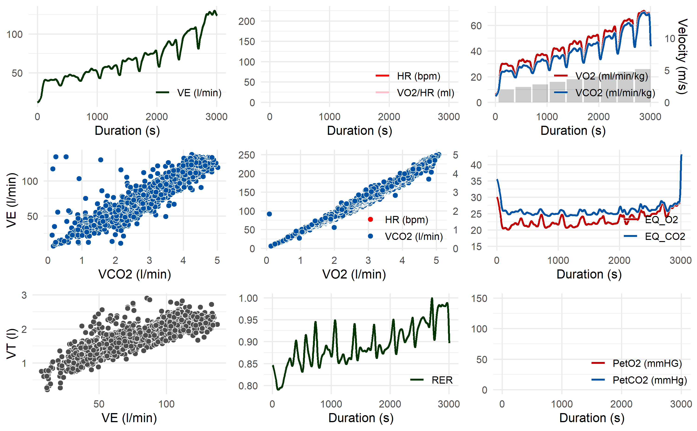

Overview
The goal of spiro is to enable a fast and standardized workflow with raw data from cardiopulmonary exercise testing. The package provides simple tools for data import, processing, summary and visualization.
WARNING: This package is currently under development. At the moment, I recommend to use it for demonstration or testing purposes only. When using
spirofor scientific analyses, make sure to state the exact package version, as at this stage of development the package’s functions may undergo major changes.
Installation
Install the current development version from GitHub:
# install.packages("remotes")
remotes::install_github("smnnlt/spiro")Usage
- Use
spiro()to automatically import and process raw data from cardiopulmonary exercise testing. - Use
spiro_summary()andspiro_max()for a stepwise summary or the calculation of maximum parameter values. - Use
spiro_plot()to visualize the data.
Example
library(spiro)
# get data path for example
file <- spiro_example("zan_gxt")
gxt_data <- spiro(file)
spiro_summary(gxt_data)
#> for pre-measures, interval was set to length of measures (60 seconds)
#> step_number load VO2 VCO2 VE HR PetO2 PetCO2 VO2_rel RE RER
#> 1 0 0.0 500.19 411.74 13.03 NA NA NA 7.58 NA 0.82
#> 2 1 2.0 1860.92 1585.75 39.87 NA NA NA 28.20 234.97 0.85
#> 3 2 2.4 2097.82 1805.27 44.63 NA NA NA 31.79 220.73 0.86
#> 4 3 2.8 2413.01 2122.17 52.63 NA NA NA 36.56 217.62 0.88
#> 5 4 3.2 2710.68 2319.93 57.19 NA NA NA 41.07 213.91 0.86
#> 6 5 3.6 3048.75 2684.87 67.45 NA NA NA 46.19 213.86 0.88
#> 7 6 4.0 3404.02 3026.70 75.91 NA NA NA 51.58 214.90 0.89
#> 8 7 4.4 3724.37 3383.64 88.36 NA NA NA 56.43 213.75 0.91
#> 9 8 4.8 4223.82 3993.55 106.44 NA NA NA 64.00 222.21 0.95
#> 10 9 5.2 4573.91 4488.36 127.54 NA NA NA 69.30 222.12 0.98
#> CHO FO
#> 1 0.27 0.15
#> 2 1.27 0.46
#> 3 1.51 0.49
#> 4 1.95 0.48
#> 5 1.89 0.65
#> 6 2.47 0.60
#> 7 2.90 0.62
#> 8 3.50 0.56
#> 9 4.68 0.37
#> 10 5.82 0.12
spiro_plot(gxt_data)
Citation
citation("spiro")
#>
#> To cite spiro in publications use:
#>
#> Simon Nolte (2021). spiro: Manage Data from Cardiopulmonary Exercise
#> Testing. R package version 0.0.0.9000.
#> https://smnnlt.github.io/spiro/
#>
#> A BibTeX entry for LaTeX users is
#>
#> @Manual{,
#> title = {spiro: Manage Data from Cardiopulmonary Exercise Testing},
#> author = {Simon Nolte},
#> year = {2021},
#> url = {https://smnnlt.github.io/spiro/},
#> note = {R package version 0.0.0.9000},
#> }Contributing
If you encounter a bug or want to request new features, please submit an issue. To have your device type of metabolic cart supported by this package, consider writing me a message with example data files. If you are familiar with writing R code, feel free to submit pull requests.
Please note that this package is released with a Contributor Code of Conduct. By contributing to spiro, you agree to abide by its terms.